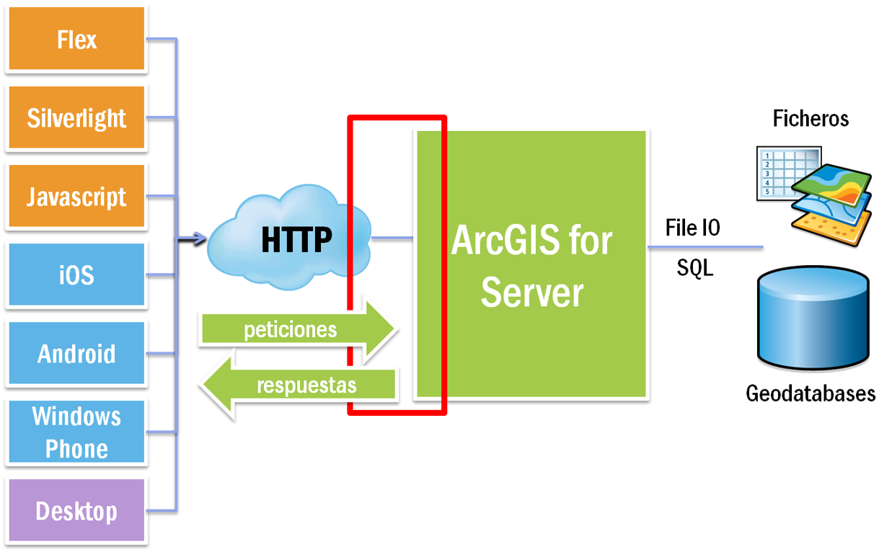

ArcGIS + Angular.js

#GeoDev
@javierabadia
@hhkaos
@javierabadia
@hhkaos
La ubicación es importante
Los mapas molan
Angular.js está de moda
Trends: Angular vs Backbone vs Dojo
Empezamos con los mapas
Con mis propios datos
¿De donde vienen los datos?
Como todo lo bueno.. a través de una API REST
ArcGIS for Server
- Servicios de Mapa
- Servicios de Features
- Servicios de Geo-Procesos
- Servicios de Rutas
- ...
ArcGIS Online
- en la nube
- SaaS
- www.arcgis.com
- developers.arcgis.com
Las APIs/SDKs de ArcGIS
- iOS
- Android
- Windows Phone
- Java
- .NET
- Qt
- MacOSX
- Silverlight
- Flex
- JavaScript
REST
- ArcGIS for Server
- ArcGIS Online
Razones para usar Angular.js
- Porque es divertido
- Porque mola
- Porque lo usa la gente que mola
- hipster developers
- Porque mi compañero de la lado no sabe
- Para ser más productivos
¿Qué tiene de especial Angular.js?
- "declarativo"
- data binding (aka magia)
- tests unitarios y e2e
- el futuro...
'declarativo' = 'extensión' de html
- nuevas tags a mi medida
- atributos ng-*
- templates {{ expresión }}
controladoras
- es la forma de dar comportamiento a partes de mi página html
- define el modelo y el comportamiento
- scope
- funciones
directivas
- es la forma de crear nuevas tags o atributos
- escribimos código javascript para definir el comportamiento
- tricky
Genial para...


"declarativo"?
conectar las cosas mediante markup
Directivas de Angular
Crear nuevos 'elementos html'
se convierte en...

Directivas esri-angular
Los culpables


Las Demos
¿Qué es un webmap?
JSON que define el contenido de un mapa
- capas
- simbología
- mapa de base
- bookmarks
- título, autor, créditos...
Se crea en ArcGIS.com, se almacena en ArcGIS Online
y que tal si...
...estilos?
25 tipos de capas
10 renderers
9 tipos de símbolos
100s de eventos
¿Directivas exponiendo
la API JS de ArcGIS
completa?
No
No
Nosotros...
...creemos...
las Directivas
"ocultan complejidad"
a la persona que escribe el markup
Rema
tu propia canoa
Háztelo
tu mismo
Repo con ejemplos
https://github.com/Esri/angular-esri-map
Ya disponible!
git clone https://github.com/Esri/angular-esri-map
bower install angular-esri-map
¿Donde hay más como nosotros?
http://www.meetup.com/MadridJS/
http://www.meetup.com/AngularJS_Madrid/
http://desarrolladores.esri.es
http://www.meetup.com/Geo-Developers/
http://www.meetup.com/AngularJS_Madrid/
http://desarrolladores.esri.es
http://www.meetup.com/Geo-Developers/
@javierabadia
@hhkaos
@hhkaos